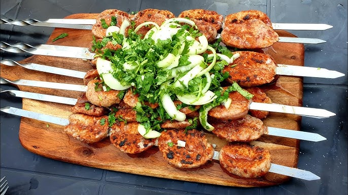

Billur Recipe

Explanation
Made using ram's testicles and resembling tripe in appearance, this kebab
is enjoyed in many regions of our country, especially in Adana.
However, billur kebab tastes more like caviar than meat. Generally
consumed as an appetizer, billur kebab can sometimes be eaten as a snack
between meals.
Ingredients
- Billur Meat
- Olive Oil
- Chili Pepper
- Salt
- Pepper
Recipe Steps
-
After the membrane is removed from the ram's testicles, they are washed
and dried.
- The dried ram's testicle is cut into thin slices.
-
After being cut, it is marinated by mixing it with olive oil, chili
flakes, salt and black pepper.
-
After marinating in the refrigerator for a few hours, ram testicles are
grilled or barbecued.